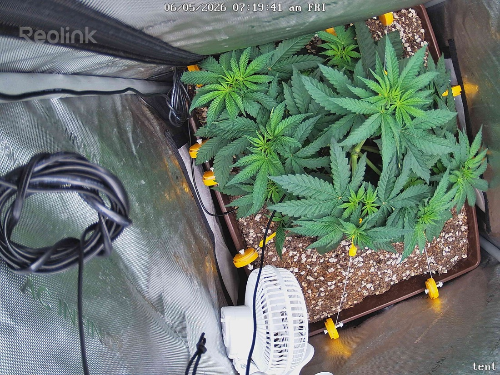

← All reports
Jun 5, 2026
Fri Jun 5, 2026 — 7:19 AM

Prognosis
Daily check-in — Day 3 of 12/12
- What changed: Canopy is noticeably more upright and reaching today vs. yesterday's flatter, more spread-out posture. Tops appear to have lifted/extended 1–2 cm — early flip stretch starting on schedule. Color stays deep, even green; LST tie-downs still holding the spread you set.
- Stress signs: None visible. No tacoing, no clawing, no tip burn, no interveinal yellowing. Leaves are flat, turgid, and praying slightly toward the light — exactly what you want at 500 PPFD.
- Soil: Surface looks appropriately dry on top from the 6/1 bottom water; no crusting, no fungus gnats visible. Next water likely in the next 1–2 days based on your ~4-day cadence.
- Phase check: ~5.5 weeks from germ, day 3 of flip — right on track. You're in the pre-flower / stretch window (typically days 1–21 of 12/12). Expect 1.5–2× height gain over the next 2–3 weeks.
- Light ramp question: Hold 500 for ~3–4 more days to let her settle into 12/12, then bump ~50 PPFD every 2–3 days as long as no tacoing or upward leaf praying-into-pain. Healthy ceiling for an SF-2000 Pro in a 2x2 during flower is ~800–900 PPFD with good VPD and CO₂-limited (ambient) conditions; most growers land at 750–850 for fat bud development without bleaching. Don't rush past 700 until week 2 of flower.
- Bud site / yield estimate: Eyeballing the canopy I count roughly 8–12 viable main colas from the topping + LST spread, plus secondary sites — call it ~20–30 bud sites total once she finishes stretching. For a single well-trained plant under an SF-2000 in a 2x2 living-soil setup, a realistic dry yield is 2.5–4 oz (70–115 g), with 3 oz being a reasonable target if the stretch fills the footprint evenly.
- Suggested next actions: No action needed today. During stretch, watch for any colas reaching above the canopy plane — tuck or tie them down to keep an even light distance.
Overall: Textbook transition into flower — healthy, even, and well-positioned for a strong stretch.